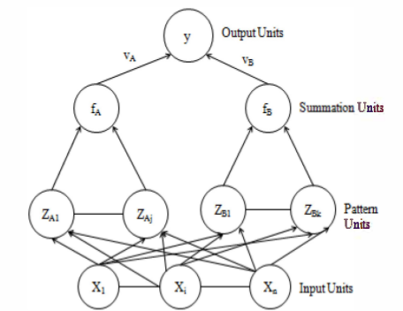

Probabilistic Neural Networks in Automated Classification of MRI images
intro content
Home

Structure of PNNs
more content
Advantages of Using PNNs
advantage 1
advantage 2
advantage 3
Implementation of PNNs
some math shiz about implementation
Role of PNNs in Medical Imaging